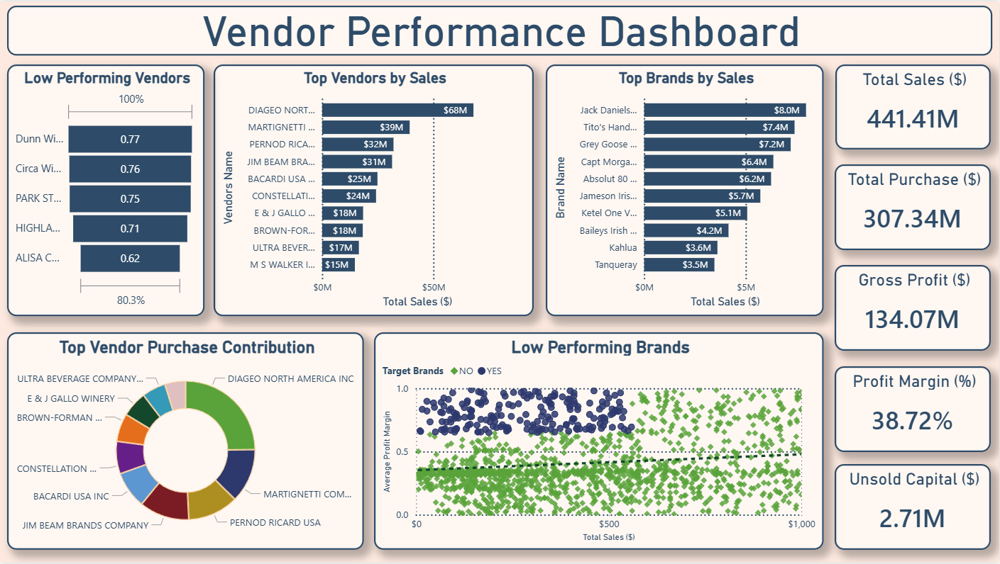

An end-to-end procurement analytics platform that combines ETL, SQL analytics, statistical analysis, and interactive Power BI dashboards to help retail organizations evaluate vendor performance, optimize procurement strategies, identify high-margin opportunities, and reduce supplier dependency through data-driven decision making.

Vendor Performance Analytics was developed to help procurement teams evaluate supplier performance beyond traditional purchase reports. The project integrates ETL automation, SQL analytics, statistical techniques, and Power BI dashboards to identify high-performing vendors, uncover profitable but underutilized brands, and support data-driven procurement strategies that improve profitability while reducing vendor concentration risk.
Retail inventory, purchases, sales, pricing, and vendor invoice datasets.
Annual sales analysed through integrated vendor performance reporting.
Gross profit generated across vendors and product brands.
Purchasing volume concentrated among the top-performing vendors.
Retail businesses manage thousands of products across numerous vendors, yet procurement decisions are often based primarily on purchase volume or historical supplier relationships. This approach can overlook high-margin opportunities, increase vendor dependency, and limit overall profitability.
The objective was to build a centralized analytics platform capable of identifying strategic vendors, evaluating brand performance, detecting low-performing but high-margin products, and measuring procurement concentration through statistical and business analysis. The platform enables procurement managers to optimize sourcing decisions, improve inventory planning, reduce supplier risk, and maximize long-term business profitability.
The project was designed to help procurement teams move beyond traditional purchasing reports by combining ETL automation, SQL analytics, statistical techniques, and interactive visualizations to support smarter vendor selection, inventory planning, and profitability optimization.
Identify high-performing vendors based on revenue contribution, purchase value, and overall business impact to support strategic sourcing.
Identify top-selling and low-performing brands to improve inventory allocation and product portfolio decisions.
Apply statistical analysis to discover high-margin vendors, evaluate pricing effectiveness, and improve procurement profitability.
Deliver executive dashboards that help procurement managers reduce supplier risk, optimize purchasing, and maximize long-term value.
Vendor Performance Analytics follows a structured analytics workflow that transforms raw procurement data into actionable business intelligence through ETL automation, SQL analytics, statistical modeling, and executive dashboards.
Six retail datasets, including inventory, purchases, sales, pricing, and vendor invoices, are collected from operational systems.
Python, Pandas, and SQLAlchemy automatically ingest, clean, merge, and standardize data inside SQLite for structured analysis.
SQL queries, EDA, correlation analysis, Pareto analysis, and confidence interval testing uncover vendor performance patterns.
Analytical findings are transformed into interactive dashboards for procurement, inventory, and executive reporting.
Business leaders identify strategic vendors, reduce procurement risks, optimize inventory, and improve overall profitability.
A unified Power BI dashboard provides procurement managers with complete visibility into vendor contribution, brand performance, profitability, inventory exposure, and purchasing trends. The dashboard consolidates multiple analytical views into a single executive decision-support interface.
The dashboard combines vendor rankings, brand performance, procurement contribution, profitability metrics, inventory exposure, and KPI monitoring to support strategic vendor management decisions.
Most procurement dashboards stop at ranking vendors by revenue. Vendor Performance Analytics extends beyond descriptive reporting by combining statistical analysis with business intelligence to uncover hidden profitability opportunities and reduce supplier concentration risk. This enables procurement teams to make sourcing decisions based on both revenue contribution and long-term business value.
Instead of evaluating suppliers using purchase volume alone, the project combines sales, profitability, vendor contribution, purchase behaviour, and brand performance to create a more complete vendor evaluation framework for procurement decisions.
Statistical techniques including Pareto Analysis, Correlation Analysis, and Confidence Interval Testing identify hidden procurement risks, high-margin opportunities, and vendor dependency, helping organizations improve profitability while reducing sourcing risk.
The analytical workflow uncovered procurement patterns, supplier dependencies, and profitability opportunities that enable business leaders to optimize vendor relationships, inventory investment, and purchasing strategy.
A small group of vendors generated the majority of business revenue, making them critical strategic procurement partners.
Approximately ten vendors contributed nearly 65.7% of total purchases, confirming the Pareto Principle within procurement operations.
Several low-performing vendors generated significantly higher profit margins, creating opportunities for targeted promotion.
Sales demonstrated a very strong positive relationship with profit, supporting revenue-driven growth strategies.
Premium brands such as Jack Daniel's, Grey Goose, and Tito's Vodka emerged as major revenue contributors.
Heavy purchasing concentration among a limited number of vendors highlighted potential supply chain dependency risks.
Based on the analytical findings, the following recommendations can improve procurement efficiency, reduce supplier risk, and maximize retail profitability.
Maintain long-term relationships with high-performing vendors that consistently contribute to business revenue and operational stability.
Increase marketing and inventory allocation for profitable vendors with relatively lower sales to improve overall margins.
Diversify procurement sources to minimize operational risk caused by excessive dependence on a small group of major suppliers.
Use vendor profitability and demand insights to improve pricing strategies, inventory planning, and purchasing decisions.
Vendor Performance Analytics integrates data engineering, SQL analytics, statistical techniques, and business intelligence tools to deliver an end-to-end procurement decision support platform for retail organizations.
Data ingestion, ETL automation, data cleaning, feature engineering, and analytical workflows.
Database creation, structured data storage, SQL querying, and ETL pipeline management.
Joins, CTEs, aggregations, vendor summary tables, and business insight generation.
Executive procurement dashboard for vendor performance, inventory, profitability, and KPI reporting.
Correlation Analysis, Pareto Analysis, Confidence Intervals, and business-driven statistical evaluation.
Version control, documentation, portfolio hosting, and project collaboration.